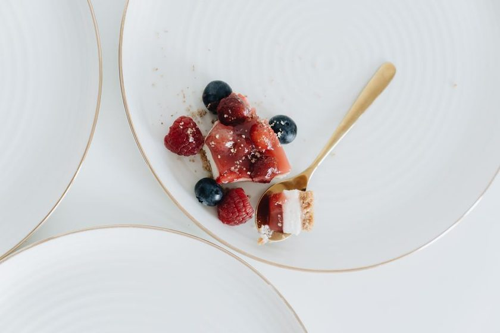
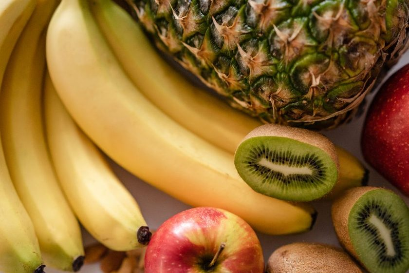
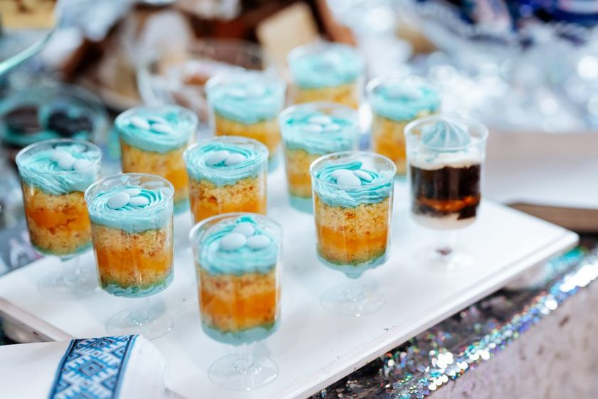
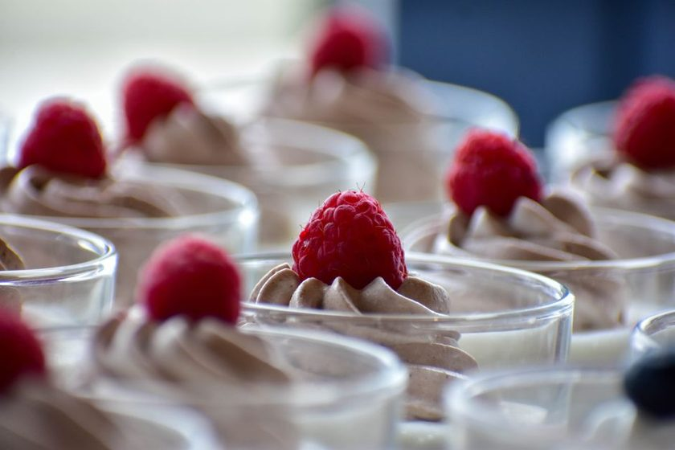
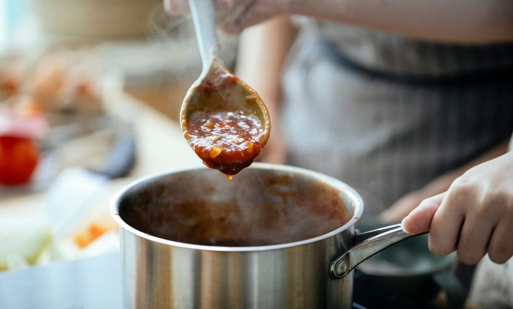
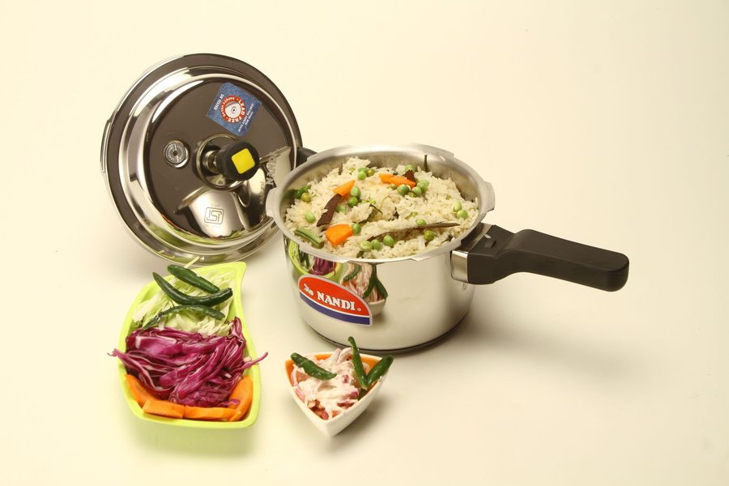
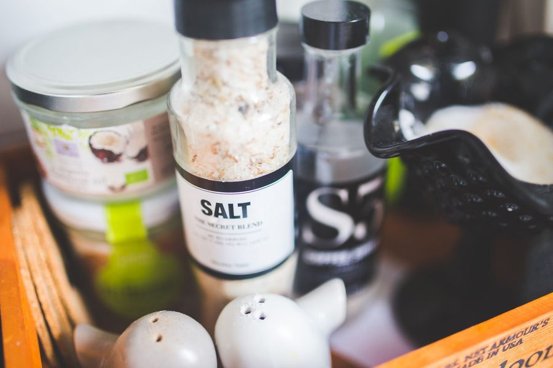

Doces & Geladas
Gelatina rosa de frutas vermelhas: a cor vem da fruta
Por que às vezes sai rosa vivo e às vezes acinzentado: a antocianina, o ácido e o tempo de fogo.
O Panela Cheia é um blog de cozinha caseira brasileira: como acertar o ponto do arroz, o que fazer com o talo da couve que ia pro lixo, como montar a marmita de cinco dias sem repetir tempero e quanto tempo cada coisa leva na pressão. Sem fórmula mágica e sem atalho — só a cozinha funcionando na segunda, na quarta e na sexta. Em julho: a série sobre gelatina e sobremesa de geladeira — proporção que firma, cor que não apaga e o ponto do creme.
Ver a série Doces & Geladas Todos os artigosJulho inteiro a redação ficou em cima de uma pergunta que aparece muito na caixa de e-mail: por que a gelatina caseira às vezes não firma. A resposta rendeu seis textos — proporção por litro, o que a fruta crua faz com o pó, o tempo entre uma camada e outra e o ponto exato do creme da mousse.

Por que às vezes sai rosa vivo e às vezes acinzentado: a antocianina, o ácido e o tempo de fogo.

Quantos gramas por litro, como hidratar sem empelotar e por que ferver estraga o ponto.

Bromelina, actinidina e papaína dissolvem a gelatina. Como desativar em 5 minutos de fogo.

O ponto pegajoso, a temperatura da camada que entra e como desenformar sem partir a fronteira.

Qual creme de leite bate, por que a tigela vai ao congelador e onde parar antes de virar manteiga.

Cinco graus separam a calda da geleia. O ponto nappe e a proporção de açúcar que não erra.

A proporção 1 xícara de arroz para 2 de água, o refogado de 90 segundos e o motivo de mexer só uma vez, no começo.

Como virar 300g de sobra que iria pro lixo em 2 litros de caldo caseiro, em porções prontas pra congelar.

Como montar 5 marmitas no domingo sem repetir o mesmo tempero base até quarta-feira.

O teste do dedo, o termômetro e os 4 pontos da carne, do mal passado ao bem passado.

Uma tabela com o tempo exato de pressão para feijão, grão-de-bico, mandioca e outros 6 alimentos.

Por que salgar a carne 40 minutos antes muda a textura e o que muda se você salgar o feijão no começo.

O que congela bem, o que perde a textura e como descongelar sem virar caldo.

Temperatura e tempo para deixar brócolis, abobrinha e batata crocantes sem ressecar.

A sopa da semana mais fria do ano: abóbora, gengibre e o toque de leite de coco no final.
Recheio é o app que a redação do Panela Cheia usa em casa: você diz o que já tem na geladeira e na despensa, ele monta o cardápio dos próximos 7 dias e gera a lista de feira só com o que falta — sem repetir prato e sem sobra jogada fora.
Somos uma redação pequena que testa cada receita pelo menos três vezes antes de publicar. Escrevemos sobre a cozinha de segunda a domingo: o arroz do almoço, a marmita que precisa durar até quarta, o talo que ia pro lixo e virou caldo. Sem fórmula mágica, sem hype — quantidade, tempo e temperatura reais. Conheça a equipe e a política editorial →